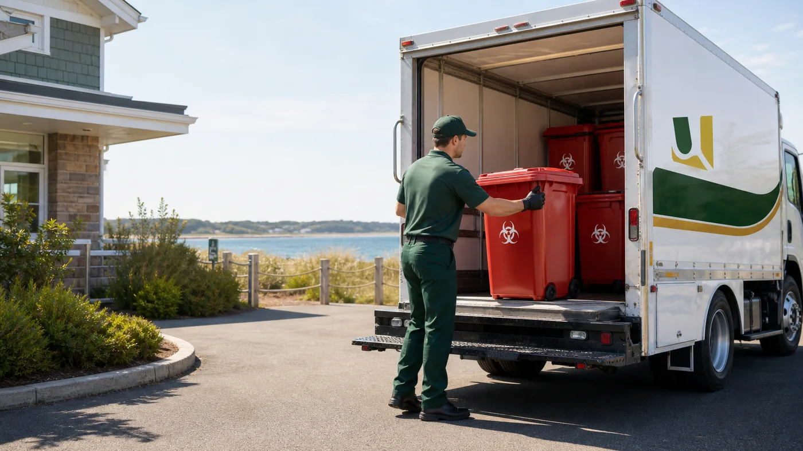
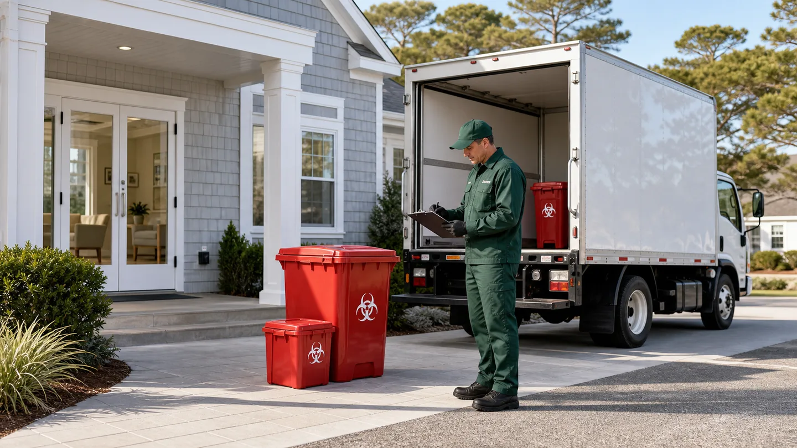

Seasonal healthcare support
Pickup schedules can be reviewed against seasonal patient volume, operating hours, and storage needs.

Location
United Medical Waste supports Cape Cod healthcare centers, urgent care clinics, seasonal facilities, and medical offices with pickup planning, sharps support, pharmaceutical waste review, training support, and documentation..
Service Review
Share the basics and the team will help review pickup, containers, records, training, and waste stream needs.

Local Services
United Medical Waste supports Cape Cod-area facilities with pickup planning, container setup, sharps management, pharmaceutical waste review, training support, and service records.
Programs are built around your facility type, waste volume, storage space, pickup frequency, and documentation requirements.
Pickup schedules can be reviewed against seasonal patient volume, operating hours, and storage needs.
Container support, sharps pickup, red bag waste pickup, and records for outpatient care settings.
Training topics for teams that handle regulated medical waste, sharps, and pharmaceutical waste.
Service Planning
Each location has different routing, storage, access, and documentation needs. Use these points as a starting point when reviewing service for your facility.
Pickup frequency can be reviewed when patient volume changes during high-traffic months.
Container placement can be matched to compact clinics, urgent care rooms, and back-of-house areas.
Programs are planned with Massachusetts regulated medical waste rules in mind.
Service documentation can stay organized for facility review and internal policy needs.
Regulatory Context
Massachusetts 105 CMR 480.000 sets minimum requirements for medical or biological waste management. Cape Cod facilities should review state duties, local procedures, seasonal storage conditions, and documentation requirements before changing service.
Local Coverage
United Medical Waste supports Cape Cod-area healthcare facilities with pickup planning, containers, staff training support, and organized service records. Include your facility type, location, primary waste streams, and current pickup schedule when requesting service.
Get a QuoteLocal Reading
Compliance reading curated for your region.
Guide
Medical waste disposal in Massachusetts is governed by 105 CMR 480. Learn the rules for storage, segregation, transport, and compliance for your facility.
Guide
Learn how medical waste disposal in New England works, including state requirements across MA, CT, RI, ME, NH, and VT, plus OSHA rules.
Guide
Medical waste pickup services for small practices across New England. Compliance guidance for primary care, dental offices, and specialists. Get a free was
Guide
Regulated medical waste pickup schedules vary by facility size and waste volume. This guide helps you choose between weekly, same-day, and on-call service.
Common Questions
In Massachusetts, medical and biological waste is regulated primarily by the Department of Public Health under 105 CMR 480.00 (State Sanitary Code Chapter VIII). MassDEP also regulates certain aspects under 310 CMR 19. Both agencies must be satisfied for full compliance.
Facilities that generate more than 50 pounds of regulated medical waste per month must obtain a permit and register with MDPH. Generators must also submit a Notification of Hazardous Waste Activity form to obtain an EPA ID number. Even small generators (under 50 lbs/month) must use approved containers and follow proper handling rules.
Any business that provides medical treatment or care is a regulated generator under Massachusetts law. This includes hospitals and dental offices, but also tattoo parlors, body piercing studios, funeral homes, veterinary clinics, and research labs. If your business produces waste that could transmit infectious disease, Massachusetts regulations apply.
Sharps must be placed immediately after use into puncture-resistant, shatterproof, rigid containers colored red or fluorescent orange-red. Household sharps users (e.g., diabetics) cannot place sharps in regular trash - they must go to an approved sharps collection kiosk (fire stations, police stations, public health offices) or an approved mail-back program. Commercial generators must use a licensed hauler.
Massachusetts approves incineration (required for sharps - then ground before landfill), steam disinfection/autoclaving, and chemical disinfection. Additional methods may be approved if verified by scientific studies. Untreated medical waste must bear the international biohazard symbol on red packaging before leaving your facility.
Massachusetts requires generators to prepare a manifest (tracking document) before shipping any untreated waste off-site. It must be signed by the generator, transporter, and disposal facility - and the signed copy returned to the generator and retained for three years. A log of off-site transport (quantity, dates, destination) is also required.
Violations can be enforced by MDPH, MassDEP, OSHA, and the DOT - each with separate penalty authority. OSHA fines can reach $70,000+ per violation per day for serious infractions. DOT violations for improper transport packaging can reach nearly $80,000 per violation. Beyond fines, facilities risk license suspension and reputational damage.
Yes. Even small quantity generators in Massachusetts must follow proper segregation, use approved containers, and ensure waste is treated before disposal. Permit requirements scale with volume, but handling rules - biohazard labeling, approved containers, prohibited household trash disposal - apply to all generators regardless of size.
Need medical waste pickup or training support on Cape Cod? Share your facility type, seasonal volume, waste streams, and current pickup schedule.
Get a QuoteContact Us